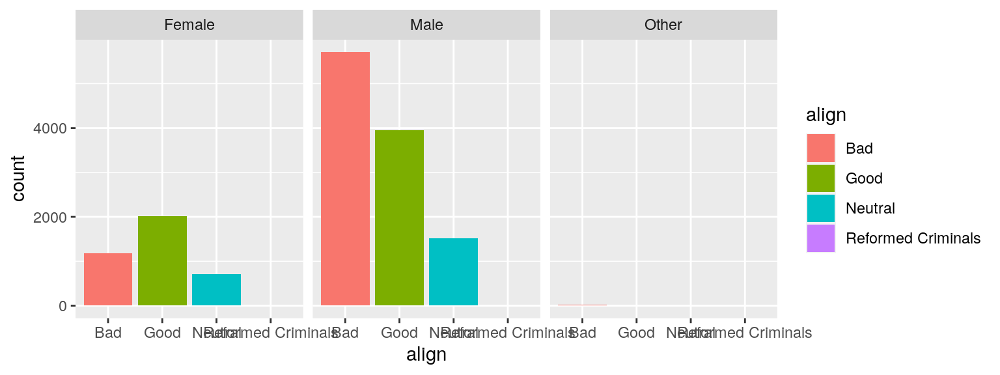

In this tutorial we’ll learn about summarizing and visualizing data. Sometimes, we refer to the techniques covered in this tutorial as exploratory data analysis or EDA.
EDA is all about learning the structure of a dataset through a series of numerical and graphical techniques. When you do EDA, you’ll look for both general trends and interesting outliers in your data. You’ll also generate questions that will help inform subsequent analysis.
Our first dataset comes from comic books. Two publishers, Marvel and DC, have created a host of superheroes that have made their way into popular culture. You’re probably familiar with Batman and Spiderman, but what about Mor the Mighty?
The comics dataset has information on all comic characters that have been introduced by DC and Marvel. Let’s take a look at the dataset and explore it.
glimpse(comics)At the top the output tell us the dimensions of this dataset: over
15,000 cases and 11 variables. With one exception (appearances) we see
that that all variables are characters, or of the chr data
type. These are variables that we could potentially consider
categorical, as they all have a finite number of levels.
Let’s view the first few rows of the dataset
head(comics)The first case in the dataset is Peter Parker, alias: Spiderman,
where his alias and character name are included in the first variable
name. The second column, id, shows that Peter
Parker’s personal identity is kept secret, and the third column tell us
that his alignment is good; that he’s a superhero, not a
super villain.
We can learn the different values of a particular character variable
by using the distinct() function. It’s clear that the
alignment variable can be “good” or “neutral”, but what other values are
possible? Here, we pipe the comics data into the
distinct() function, and then insert the align
column into the distinct() function.
comics %>%
distinct(align)Inspecting the resulting table, we learn that there are in fact four possible alignments, “Good”, “Bad”, “Neutral”, and “Reformed criminals”. Good thing we checked that! If we do the same for identity, we learn that there are four possible identities.
comics %>%
distinct(id)A common way to represent the number of cases that fall into each combination of levels of two categorical variables, such as these, is with what’s called a “contingency table.” Creating a contingency table requires three steps:
count() function to count the number of
observationscount() function# to get the long table
comics %>%
count(align, gender)pivot_wider() functionalign should be in the rows and the
values of gender to be in the columns.names_from argument tells R where the names of the
new columns are coming from (i.e. what variable)values_from argument tells R where the values in
the table are coming from. Here, the values we want in our table are
stored as a variable labeled n in our table.# to get a wider table
comics %>%
count(align, gender) %>%
pivot_wider(names_from = gender, values_from = n)Create a pivot table such that the values of gender
should be in the rows and the values of align to be in the
columns. Sample output:
Your code:
comics %>%
count(align, gender) %>%
pivot_wider(names_from = align, values_from = n)The output tells us that the most common category, at a count of 4352, was “Bad” characters with “Secret” identities.
While tables of counts can be useful, you can get the bigger picture by translating these counts into a graphic. The graphics that you’ll be making in this tutorial utilize the ggplot2 package, which you got a glimpse of in the previous tutorial. Every ggplot requires that you specify three elements:
Generally, your ggplot() will look something like this,
where the dataset is the first argument in the ggplot()
function. Next, the variables we are interested in plotting are found
inside the the aes() function, which stands for aesthetics.
Finally, we specify the geom function to use when plotting
the data.
ggplot(data = [DATASET], aes(x = [X VARIABLE],
y = [Y VARIABLE],
fill = [COLOR VARIABLE])) +
geom_***() Here, we’re interested in the relationship between two categorical
variables, which is represented well by a stacked bar chart. In a bar
chart, we plot the counts or frequencies of different levels of a
categorical variable, by specifying the categorical variable we want to
be on the x-axis, and adding a geom_bar() layer to the
plot.
ggplot(comics, aes(x = align)) +
geom_bar() A stacked bar chart adds another layer to the plot, by dividing each
bar into different levels of another variable. This coloring of the bars
comes from adding a second categorical variable into the
fill argument of the aes() function. This
looks something like this:
ggplot(comics, aes(x = gender, fill = align)) +
geom_bar() Add the argument position = "dodge" to the
geom_bar() and observe the change to the bar chart.
ggplot(comics, aes(x = gender, fill = align)) +
geom_bar(_______) Another useful way to visualize the distribution of a single variable
is to condition on a particular value of another variable. We might be
interested, for example, in the distribution of id for all neutral
characters. We could either filter the dataset and build a barchart
using only cases where alignment was “Neutral”, or we could
use a technique called faceting. Faceting breaks the data into subsets
based on the levels of a categorical variable and then constructs a plot
for each level.
To implement faceting in ggplot2, all we need to do is add another
layer to our plot. To add a faceting layer we use the
facet_wrap() function. Inside the facet_wrap()
function we add a tilde (~) and then the name of the
variable we want to facet by (e.g. ~align). This can be
read as create the above plot “broken down by align”. The result is
three simple bar charts side-by-side, the first one corresponding to the
distribution of gender within all cases that have a “Bad”
alignment, and so on, for “Good” and “Neutral” alignments.
ggplot(comics, aes(x = align, fill=align)) +
geom_bar() +
facet_wrap(~gender)
Add an extra layer to the above plot such that the x-Axis labels are rotated by 45 degrees with right-justified for horizontal justification.
+
theme(axis.text.x = element_text(angle = 45, hjust = 1))ggplot(comics, aes(x = align, fill=align)) +
geom_bar() +
facet_wrap(~gender)+
theme(axis.text.x = element_text(angle = 45, hjust = 1))